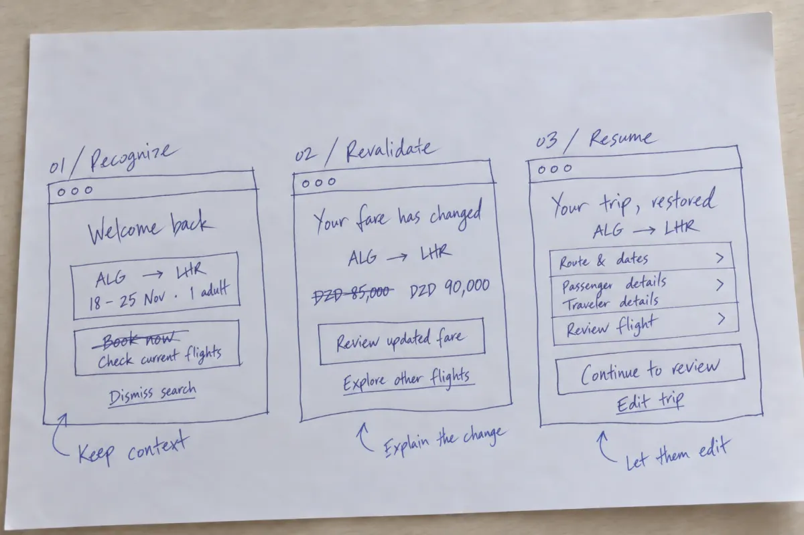

Left before booking.
Cart recovery · Travel
Continue the trip,
not the search.
Restore an interrupted flight search across web, app, and email.
Saved searchCurrent
ALGAlgiers
LHRLondon
Resume your trip.
Your route and dates are saved. Check the latest fare before continuing.
View the experienceProject summary
Restore the trip. Recheck the fare.
A saved search that returns with its context intact.
- Role
- Journey strategy and UX design.
- Channels
- Web, app, and email.
- Status
- Concept; impact not yet tested.
The problem
The search ended.
The intent may not have.
Generic reminders returned travelers to an empty search.
Returned after recovery.
Booked after recovery.
Supplied programme figures; incremental lift is unknown.
The strategy
One saved trip.
Three channel roles.
Keep the trip; recheck live availability.
WebRestore the search
AppResume across devices
EmailExplain the return
Restore before contact
Coordinate messages
Show fare changes
The design
Recognize. Revalidate. Resume.

TRADEOFF
Continuity before discounts.
The experience
Different entry points.
The same trip.
Explore a channel
Return conditions
What happens next?
Validation
Test comprehension.
Then impact.
PRIMARY
Completed bookings per eligible traveler
GUARDRAILS
Opt-outs · complaints · invalid fares · duplicate bookings
Evidence
Concept shown. Impact unproven.
View the test planReflection